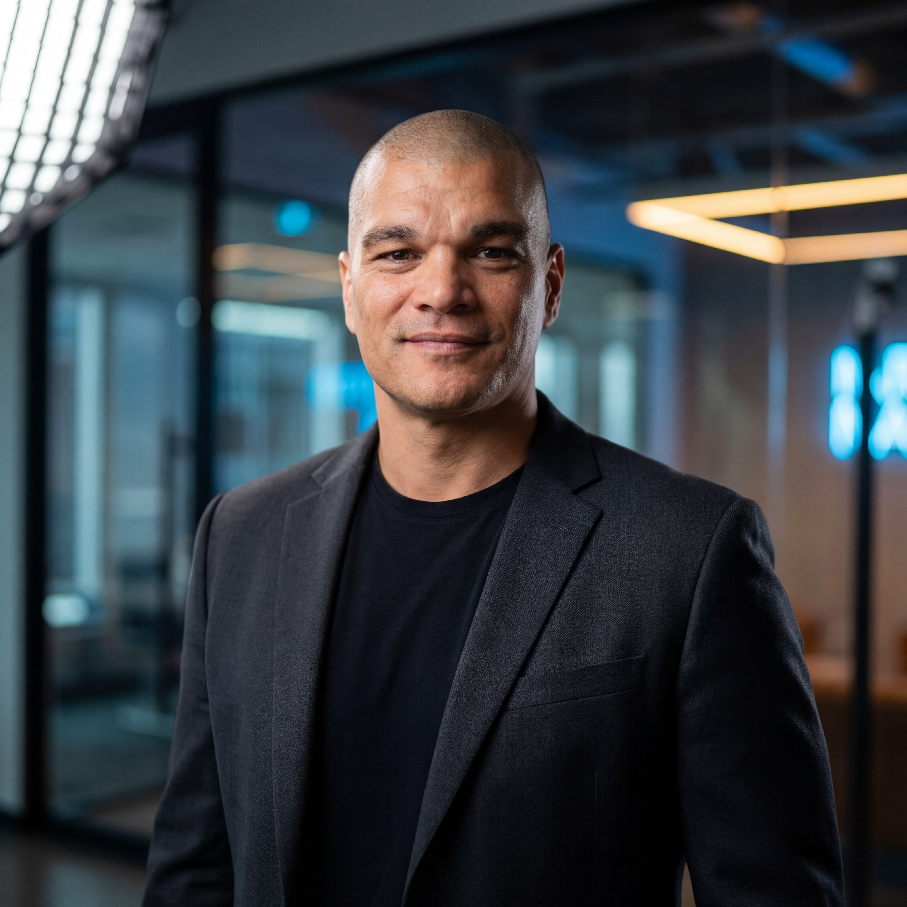

I'll build it live on the call. Yours to keep — no purchase required.
No pitch. No invoice. No strings.
I personally run every call. 3 spots available per week. Book yours.
You're great at what you do. But between responding to inquiries, chasing follow-ups, confirming bookings, and handling admin — half your day is gone before you've done any real work.
It's not a leads problem. It's not a speed problem. It's a systems problem. The tasks that should run automatically are still running through you.
And it's fixable — in less time than this call takes.
Walk me through your day — how clients find you, how you follow up, what admin tasks eat your hours. I listen for the highest-impact place to plug the gap.
Not a generic solution — your specific bottleneck. Whether that's a follow-up, a booking confirmation, a 2am response, or something else entirely.
You watch it get built. You see it run. You own it. No invoice, no pitch, no obligation. That automation is yours whether we ever work together again or not.

I'm Joe. Clinical hypnotist. Author of The Unspoken Contract.
When I was marketing my book, I hit a wall. The self-help industry rewards the loudest, not the best. I needed to show up everywhere — but I was busy actually helping people. So I built a system instead.
When someone booked an appointment, a welcome email went out automatically. An intake form. A notification with their details. Three tasks I never had to touch again.
That was the moment I understood: most businesses don't have a skill problem. They have a systems problem.
That's what I've been solving ever since — starting with yours.
If you're getting 5+ inquiries a month, you're exactly the right size. Automation makes the biggest difference when you don't have an army. We become yours.
There isn't one. The call is free. The automation is free. If you want to keep going after, we can talk. If not, you still leave with something running in your business. That's the whole point.
Thirty minutes to get time back permanently. The irony of that objection is not lost on either of us.
We don't automate relationships. We automate the admin that keeps you from them. Your team gets more time to do what actually matters — be with people.
Most AI implementations fail because they're sold, not built. You'll see this one built. In front of you. Before the call ends. You decide if it works.
30 minutes. One automation. Running in your business before we hang up. No credit card. No contract. No pitch until you ask.
I personally run every call — 3 spots per week. Atlantic Canada small businesses only.